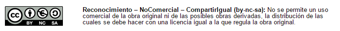

Derechos y deberes
Derechos
Si tu labor va a tener retribución, está fijada por resolución en 25€ por hora de curso.
* Es decir, para un curso de 50€ son 1 250€; descontando IRPF, 978,50€.
Si tu labor no va a tener retribución o, según nuestra valoración, tiene una retribución menor a la merecida, te damos una publicación con ISBN.
En los dos casos cedes la propiedad a la DGA y los derechos de los contenidos serán Creative Commons NC-BY-SA (o sea, la autoría siempre será tuya y se te reconoce y cita en la obra, pero ya no tienes su propiedad y otra persona no puede aprovecharse económicamente de ella, y esto afecta también a las posibles obras derivadas).

POR FAVOR, LEE MUY BIEN EL APARTADO 5.4.- DERECHOS DE AUTORÍA
Cuando acabes tu trabajo y tenga nuestro visto bueno, tienes que entregar estos papeles.
Tutorización
También te proponemos que te encargues de la primera tutorización de tu curso (y las siguientes hasta que haya una convocatoria abierta de tutores y tutoras) para que puedas mejorarlo.
- Excepto en el caso de los minicursos, pues no se tutorizan.
La retribución de la tutorización está fijada por resolución a 0.7€/hora y alumno/a
- es decir, para un curso de 50 horas y 40 participantes: 1.400€
- La tutorización de curso on-line se reconoce con una certificación con número GIFP. (Ver certificados como tutor/a)
Deberes
El creador o la creadora tiene que entregar:
Contenido del curso en un documento de Google, claramente divido en módulos y habiendo utilizado los estilos de texto.
Mira en está chupao!!!
Para resolver cualquier duda técnica, ponte en contacto con CATEDU - Aularagón - Contenidos.
Evaluación en cada tema:
Cursos tutorizados:
- Es obligatorio hacer una evaluación tipo entrega, es decir, que el alumnado tenga que entregar un fichero, enlace... a quien tutoriza el curso.
- Opcional: se pueden incluir preguntas tipo test.
- Cursos no tutorizados (minicursos). Hay que diseñar preguntas para el cuestionario de moodle o tareas que puedan evaluarse entre el propio alumnado mediante un foro.
- ¿En qué formato hay que entregar las evaluaciones? Tienes dos opciones: o en el propio documento de Google compartido o mediante la otra opción que te recomendamos que consiste en que te damos acceso al Moodle para ponerlas directamente y así queda tal como lo deseas.
- Para las evaluaciones tipo entregas:
- Unas instrucciones lo más precisas posibles de qué tiene que entregar el alumnado. Cuanto más precisas, más fácil es la tutorización.
- Puede ser una entrega tipo texto (una respuesta o un enlace...) o una entrega tipo fichero (un Word, por ejemlo).
- Una breve rúbrica o pautas mínimas exigibles de la entrega que sirvan de guía a quien lo tutorice para calificarlo como APTO (esta rúbrica no hace falta si en el enunciado está claro el mínimo exigible).
- Por favor, evita preguntas con respuestas que tengan una valoración subjetiva, ya que dificultan la tutorización y la evaluación.
- Para las preguntas tipo test sí que recomendamos que lo hagas en Moodle.
- La puntuación de cada pregunta.
- El enunciado de las preguntas.
- Se pueden incluir imágenes, enlaces, código embebido...
- Las diferentes opciones marcando la verdadera o verdaderas.
- Se puede fijar % de peso (si es tal opción, es el 100% de la puntuación; pero si marca tal opción, es el 50% de la puntuación).
- Para las evaluaciones tipo entregas:
¿Cuantos módulos o temas debe tener mi curso?
Normalmente establecemos que el curso tenga un tema-módulo por cada 10 horas de duración del curso para los cursos tutorizados y, para los minicursos, 2-3 temas breves.
Los cursos tutorizados tienen una duración de 30 - 40 - 50 horas (no aceptamos más de 50).
- Hay que tener en cuenta cuánto tiempo cuesta realizar la actividad.
Los minicursos tienen una duración de entre 10 - 20 horas.
Dónde entrego los materiales y en qué plazos
- En Aularagón hay tres convocatorias: Junio, Octubre y Febrero. La entrega dependerá de en qué convocatoria vaya a salir tu curso.
- Te pedimos que durante el mes anterior al de la convocatoria ya hayas entregado material provisional para poder realizar las revisiones necesarias y así poder tener lista la versión definitiva para la convocatoria.
- Dónde: por contacto al principio y mediante debate en el documento de google posteriormente.
¿Se puede ver un ejemplo de curso?
¡Claro! Entra en la plataforma de Moodle http://moodle.catedu.es/ en cualquier curso, como persona invitada.

Manual de Creadores de Aularagón por Equipo de CATEDU bajo licencia Creative Commons Reconocimiento-NoComercial-CompartirIgual 4.0 Internacional License.